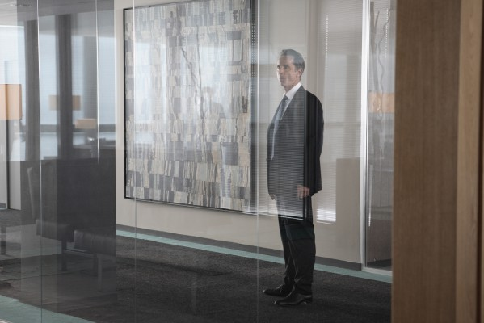

#9808 Elizabeth


 IMDB-Wertung: 7.5 / 10
IMDB-Wertung: 7.5 / 10  Tomatometer: 82
Tomatometer: 82  Metascore: 0
Metascore: 0 
This film details the ascension to the throne and the early reign of Queen Elizabeth the First, as played by Cate Blanchett. The main focus is the endless attempts by her council to marry her off, the Catholic hatred of her and her romance with Lord Robert Dudley.
Jahr: 1998
Dauer: 123 Minuten
FSK: 12
Land: England Studio: PolyGram Filmed EntertainmentTonspuren: DTS - ,
Untertitel:
Auflösung: 1080p (1920x1040) Größe: 9000 MB
Genre: Drama, Geschichte, Biographie
Regisseur: Shekhar Kapur
Drehbuch: Michael Hirst
Soundtrack: David Hirschfelder
Darsteller:
 Cate Blanchett als Elizabeth I
Cate Blanchett als Elizabeth I Geoffrey Rush als Sir Francis Walsingham
Geoffrey Rush als Sir Francis Walsingham Christopher Eccleston als Duke of Norfolk
Christopher Eccleston als Duke of Norfolk Joseph Fiennes als Robert Dudley, Earl of Leicester
Joseph Fiennes als Robert Dudley, Earl of Leicester Richard Attenborough als Sir William Cecil
Richard Attenborough als Sir William Cecil Fanny Ardant als Mary of Guise
Fanny Ardant als Mary of Guise Eric Cantona als Monsieur de Foix
Eric Cantona als Monsieur de Foix Vincent Cassel als Duc d'Anjou
Vincent Cassel als Duc d'Anjou Kathy Burke als Queen Mary Tudor
Kathy Burke als Queen Mary Tudor Edward Hardwicke als Earl of Arundel
Edward Hardwicke als Earl of Arundel Emily Mortimer als Kat Ashley
Emily Mortimer als Kat Ashley John Gielgud als The Pope
John Gielgud als The Pope Paul Fox als Male Martyr
Paul Fox als Male Martyr Terence Rigby als Bishop Gardiner
Terence Rigby als Bishop Gardiner- Amanda Ryan als Lettice Howard
 James Frain als Alvaro de la Quadra
James Frain als Alvaro de la Quadra Jamie Foreman als Earl of Sussex
Jamie Foreman als Earl of Sussex Kelly Macdonald als Isabel Knollys
Kelly Macdonald als Isabel Knollys- Kate Loustau als Lady in Waiting
- Lily Allen als Lady in Waiting
- Angus Deayton als Waad, Chancellor of the Eschequer
- Kenny Doughty als Sir Thomas Elyot
- Joseph O'Conor als Earl of Derby
- Daniel Moynihan als Bishop #1
- Jeremy Hawk als Bishop #2
- Tim Bevan als Handsome Man
 Daniel Craig als John Ballard
Daniel Craig als John Ballard Alfie Allen als Arundel's Son
Alfie Allen als Arundel's Son- Daisy Bevan als Arundel's Daughter
 Jean-Pierre Léaud als (uncredited)
Jean-Pierre Léaud als (uncredited)- Ben Mars als Royal Guard of Honour (uncredited)
- Daniel O'Meara als Henchman (uncredited)
-  Jocelyn Quivrin als French Guard (uncredited)
 Matthew Rhys als (uncredited)
Matthew Rhys als (uncredited)- Liz Giles als Female Martyr
- Rod Culbertson als Master Ridley
- Peter Stockbridge als Palace Chamberlain
- Valerie Gale als Mary's Dwarf
- George Antoni als King Philip II of Spain
- Wayne Sleep als Dance Tutor
- Sally Grey als Lady in Waiting
- Elika Gibbs als Lady in Waiting
- Sarah Owen als Lady in Waiting
- Joe White als Master of the Tower
- Matt Andrews als Norfolk's Man
- Liam Foley als Norfolk's Man
- Lewis Jones als Priest
- Michael Beint als Bishop Carlisle
- Hayley Burroughs als Elizabeth's Dwarf
- Brendan O'Hea als Lord William Howard
Datei: X:\1998\Elizabeth (1998, FSK12, 1920x1040).mkv seit 29.10.2018
Festplatte: HD 1996-2002
 Es gibt insgesamt 86 Filme in der Gruppe '1998'
Es gibt insgesamt 86 Filme in der Gruppe '1998'